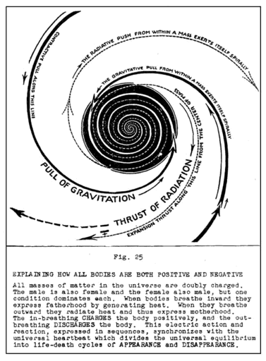
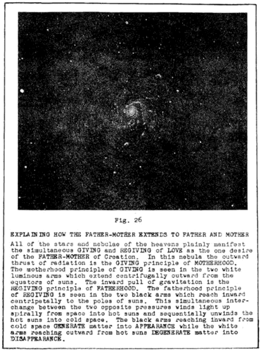

Lesson 31: The Supreme Mystery of the Ages (Reincarnation)¶
To rebuild new concepts of Nature’s workings is not easy for you, nor is it easy for me to explain it simply. For you it requires great concentration, followed by much decentration. For me it needs the power to make simple for you that which seems inconceivably complex to you. I assure you, however, that when you finally arrive at full knowing of the basic simplicity of God’s creative principle you will KNOW it in all of the simplicity in which I KNOW it. And it will transform YOU by its illumining as it transformed ME.
The simplest of all stories is the hardest to tell when one has to tell it to the senses in words. This marvelous story we are telling you cannot be told to the senses in words. It can be told only by inspired Mind to reinspired Mind. It cannot be sensed. It must be KNOWN.
The story is not in the lines of words, therefore, it is in the blank spaces between the lines. These you can read only AFTER your senses have seen the words. Pause, therefore, often enough for your Mind to read the blank spaces between the words so that you will awaken the KNOWING which lies dormant within the still Light of your Consciousness, instead of only the vibrant motion of your senses which know nothing, but can remember and repeat everything.
Let the noise of your vibrating senses die down once in awhile and seek the silence from which that noise springs. In that way you can alone KNOW the great mystery which is being unfolded for you here in these pages, step by step, by taking one idea at a time and telling you about it as simply as possible. We MUST talk about them simply, for from now on you will be confronted with new thoughts and ideas which are so entirely new and strange to you that it will require a great effort for you to discard your old primitive concepts, which your senses have deceived you into forming, and replace them with new ones beyond the power of your senses to distort. It is not easy to step into another world which is utterly different from that which your senses have built up for you, but the reward for the effort will simplify your life and multiply your power to control it.
Proceeding in this fashion we will tell, step by step, how God seemingly divides His indivisible ONENESS into countless many seemingly separate individual ONES. Also how God seemingly extends countless many changing, and differently conditioned visible bodies of complex forms, from the ONE formless, unchanging, unmeasurable and unconditioned Source of the entire illusion which Creation is.
GOD CREATES ONLY ONE FORM¶
f. 0283 · p. 283In the electrically divided universe there is but one divided form of one divided body–and that one simple form is the cube-sphere. The sphere is the visible compressed half of the one polarized body. The cube is the invisible other expanded half.
This one body form is in the making and the unmaking everywhere in the universe. When the visible sphere is completed in its making into a true sphere its invisible other half is then a true cube.
Together the cube-sphere is the basic one form of all bodies. Your own body is composed entirely of cube-spheres, and so is the body of the violet, insect, elephant, automobile or ocean liner. The complexity of Nature’s countless thousands of forms disappears in the simplicity of the cube-spheres, of which all forms of animal, vegetable and mineral life are composed.
It may be difficult for you to think of your body in terms of cube-spheres when you are so accustomed to thinking of your body as you see it in the mirror. In it you see a body with legs, arms, head, hands and feet. It is even difficult for you to think of your body as composed of atoms. If, however, you earnestly desire to know what happens to the pattern of your body structure, and of the countless thoughts which you have conceived during the only kind of life you know, and expressed in the only kind of body you know, you will give much thought to the cube-sphere wave-field which is the basic form of God’s Creation.
All other forms are combinations of cube-spheres, or they are cross sections of them, such as you see in crystal forms of the elements which are on their way to becoming true cube. See Fig. 69. Never forget that all bodies, human and otherwise, are composed of the elements of matter.
In this knowledge of the inter-relationship of the cube-sphere lies the answer to thought-transmission between living people and those whose bodies have passed beyond our range of sensing. This much hoped for possibility will come within the range of your comprehension, and possibly within your powers of practice, when you KNOW that thought bodies are the basis of the material bodies with which you are familiar.
The sphere is the result of the concentrative pulsation of God’s thinking which pulls inward from within to focus the light of God’s thinking to a point of stillness, around which a thought body can be formed. This causes that universal effect, which we know as “gravitation”, and the still point of concentration is a center of gravity. GRAVITATION MULTIPLIES POWER.
The cube is the result of the decentrative pulsation of God’s thinking which thrusts outward from within to the stillness of the cube boundaries to produce the opposite effect which we know as “radiation”. RADIATION DIVIDES POWER.
Gravitation and radiation are the opposite ends of the piston which motivates the heartbeat of this eternally living dual body of God, which is our dual body. Its continual giving and regiving manifests the love principle in both the action and reaction–not just in one of them.
f. 0284 · p. 284Their continual interchange in spiral lanes of opposed directions gives us the incandescent light of hot spheres by the friction of resistance to the interpassings of both in such close quarters as the vortical centers of cube-spheres. Conversely, the release of that resistance in the widening lanes of the outer spiral direction gives us the cold and dark of the cube half of the wave-field which encloses every divided body in the universe. To exemplify this effect see the oppositely directioned arrows, marked A and B in Fig. 67 on page 492.
No matter where you look out into Nature, whether it be the bark, wood or leaf of a tree–or speck of dust on a butterfly’s wing–the grass in the meadow or the deer eating the grass–or your own body of many forms and substances, from the hair on your head to the nails on the ends of your fingers and toes–all of them are composed of cube-spheres which are either completed, or on their way to, or from, the balance point of their maturity at the amplitude reversal point of their octave waves. Of these octave waves you will hear much in later lessons.
In other words the dual body of the cube-sphere is growing to its maturity to express life, just as your body is growing to its maturity to express life–as all bodies in all the universe are doing.
After they have matured to the maximum of their generative power at their octave wave amplitudes, they begin to return to their spatial body from which they emerged–as your body likewise does.
Remember, however, that earth and space express “death” to give “life” to the compressed half of your body. You then give “life” back to the expanded half of your body by giving it your “death”. But why think of them as life and death? Why not think of them as the two expressions of life which are manifest in all things–ACTION–and REST from action.
Learn to think of life and death that way–as an interchanging continuity, instead of as the beginning and end. Think that way concerning all bodies, and all actions of all bodies which perpetually GIVE and are being REGIVEN. Think of the manifestation of the love principle in all actions of all bodies.
If you even throw a ball in the air to manifest life by charging space, you are also manifesting death by discharging earth of exactly the measure of potential which earth extended from it. Conversely, the ball regives “life” to Earth and “death” to space by the interchange of one body condition with the other. You do exactly the same thing when the inner half of your body breathes out to the outer half. You give “life” to the outer half of your body by extending “death” from the inner half.
Realize always that all bodies in all Creation are the electric recordings of God’s concentrative-decentrative thinking. Both pulsations of God’s thinking are creative–not just one pulsation. Both are constructive. Both express life –life interchanging with life. There is no “death”, nor destruction, in either pulsation of God’s continuous thinking.
Diverging rays which leave the sun discharge the sun, but when those same rays converge toward Earth they charge Earth with life. Negative discharge from any body becomes positive charge to every other body. Life flows continually. There is no death.
WE LOOK OUT INTO THE CUBE-SPHERES OF SPACE¶
We can better visualize the cube-sphere by looking up into the starry heavens. On a clear night you will see countless stars which are all true spheres –or oblate ones which are not yet completed–or which have been completed and are now being transformed into their opposite spatial counterparts.
f. 0285 · p. 285Around each star you will see tremendous expanses of dark space. You think of that empty space as formless. You cannot possibly see a cubic form surrounding every perfectly spherical star. Your senses will not permit you to see them, but your Mind will permit you to KNOW many things which your senses cannot possibly perceive. See Fig. 70.
WE MAKE A SUPREME DISCOVERY¶
It might help you to comprehend what is now coming by asking you if you have ever considered why it is that all of those millions of stars out in space do not crash into each other and wreck each other, accidentally or otherwise?
The answer to that question is that all wave-fields–which bound, and enclose each body-pair in the universe–human and otherwise–are insulated from each other by invisible planes of zero curvature, such as the six flat planes which enclose a cube, beyond which light cannot pass without reversing its polarity. See Fig. 71.
Reversal of polarity is the insulator which keeps all wave-fields in the universe in balance with each other, and insures their centering suns from colliding with other suns, and adjusts the changing orbits of all centering bodies to balance always with each other’s continually changing orbits.
Let us now consider your own dual body in this same light. Your own body is composed of countless billions of little wave-fields which bound each corpuscle of dense matter and its surrounding spatial counterpart.
What is there to prevent these spheres and spheroids of your body from colliding with each other? The answer is the same for your microscopic wave-fields as it is for the mightiest stars in the heavens.
You–as an individual unit of Creation–like every star in the firmament as an individual unit of Creation–center your own collective field which includes the millions of little ones within them, and those you take on as your desire increases in intensity.
You, as an individual unit of Creation, are a POINT OF DESIRE in the zero universe of Mind. Around that centering point, which is your Soul, you create a record of your desire, which is your dual body, in a wave-field measured out for you in the stillness of the unchanging zero universe. The measure of your wave-field is the measure of the intensity of your desire. The pattern of the body you create in it is an electric record of your desires. Your body is the record of the sum total of the desires you have expressed in the millions of years of your unfolding.
You never lose that patterned record of your desire which is your body. You always have your body. Your senses lose awareness of it for awhile, just as they do when you sleep, but your conscious Soul never loses awareness of it. Desire in your Consciousness recalls it–reassembles it part by part in the pattern of age long desire–just as desire of Soul which centers the seed of an oak reassembles the oak tree in its own pattern, leaf by leaf–its wood–its bark–its strength–its majesty of form.
If you look into the seed of the oak you cannot find the oak, or any part of it. Even with the finest microscope you cannot see any indication of leaf or wood of the tree which will assemble itself around, and extend from that seed.
f. 0286 · p. 286Nothing material is in that seed. It belongs to the zero universe of Mind desire. Centering it is that point of desire of Mind to manifest the idea of the oak. Around that centering Soul are invisible states of motion known to chemists as “the inert gases”. That is all. These invisible inert gases are in gyroscopic motion upon planes which are at a ninety degree angle from the planes of rotation of such visible elements as carbon or silicon.
No–the body of the oak tree is not in its seed, but the IDEA of the oak is there. God is there–God, the Creator, Who has desired to manifest that part of the whole idea of Creation at that point of desire which centers the seed of the oak.
Where, then, is the body of the oak? It is in that other half of its wave-field–the invisible half within which the visible half rests from its concentrative action. When desire of Mind reconcentrates upon its desire for a concentrated form of body, that concentrated form reappears by reversing its polarity from negative to positive. It centers the cube of its wave-field. It becomes the fulcrum of the wave lever which pumps each patterned part of the oak from its outer invisible body to its inner visible one.
Conversely, when desire of Mind decentrates, every state of motion which constituted the visible body expands centrifugally into the invisibility of its cube by again reversing its polarity from positive to negative.
Always remember that you have two opposed halves of your one body, just as you have two opposed swings to the pendulum of your thinking. One half of your body is for its “work” period, with short intervals for rest and body renewal, while the other half is for its long rest period, for complete renewal of the working half.
Remember also that desire to reassemble your visible body by reversing your own body polarity is centered in you, as it is in the oak and all other forms of IDEA.
When these processes of God’s creative secrets are yours to know you will more fully understand His meaning of the words written in The Message of The Divine Iliad, which read:
“For behold I am within all things, centering them, and I am without all things, controlling them.”
f. 0287 · p. 287
Archival Plate (image056.gif)¶

Archival Plate (image057.gif)¶

Archival Plate (image058.gif)¶